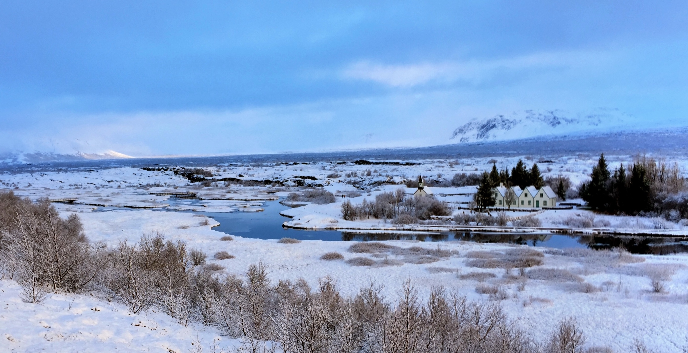

Institute of Earth Sciences, University of Iceland IES#
The history of seismography in Iceland began in 1909 with the installation of one horizontal Mainka seismograph in Reykjavík. Following a period of intermittent operation, regular operation was initiated in 1925 with the establishment of the Icelandic Meteorological Office. The number of stations increased gradually over the following decades, and in the sixties, four stations were in operation. The number of permanent stations proliferated following the Heimaey eruption in 1973 and during most of the eighties the number of stations was 40–50. The first digital seismograph stations were installed in 1990 and the analog seismic network was gradually replaced by digital stations over the next two decades. Since 2010, all seismic recordings have been digital.
The project to make historical seismograms from stations in Iceland available in digital form was initiated in 2017 by Sigurður Jakobsson and Páll Einarson, with an inital grant from Eggertssjódur.
Stations#
56 stations in Iceland beginning in 1910 and ending in 2010.
Instrumentation#
1909-1914, 1925-1952 Mainka seismograph NS (1909), EW (1913)
1951-1952 Sprengnether SP
1958 Willmore Z
1973 Landsnet
Insrumentation is mostly short period for the recording of local earthquakes. The last analog seismograph was taken out of service in 2010.
See also WWSSN for station Akureyri (AKU).
Recording Medium#
smoked paper
photographic paper
7 track-tape
pen and ink
Data Availability#
The total number of seismograms are estimated to be around 300,000. High-resolution files are on the order of 4–8 Mb each.
Image files of analog seismograms from 1910-2010 are stored on a server at the Institute of Earth Sciences, University of Iceland, and are made available to the public through their webpage. The original seismograms are stored in the Icelandic National Archives.
no. available |
format |
dpi |
color |
|---|---|---|---|
262,258 |
jpg, png |
300 dpi |
grayscale |
Original size: 435 x 945 mm
See their website to download data and for more information on data availability.
Contact#
For more information about this collection, please contact:
Páll Einarsson, Institute of Earth Sciences
Sigurður Jakobsson, Institute of Earth Sciences
Acknowledgements#
The project is funded by the University of Iceland, the Icelandic Meteorological Office, National Power Company (Landsvirkjun), Reykjavik Energy (Orkuveita Reykjavíkur), The Iceland Catastrophe Insurance and hosted by the Icelandic National Archives.
References#
Einarsson, Páll (2018). A short, incomplete history of analog seismographs in Iceland, http://seismis.hi.is/includes/History%20of%20seismographs180608.pdf
Einarsson, Páll and Jakobsson, Sigurður(2020). The analog seismgoram archives of Iceland: Scanning and the preservation of future research, JÖKULL 70, 72. doi: 0.33799/jokull2020.70.057.
Institute of Earth Sciences, University of Iceland, Seismogram Archive. Last accessed: 3 January 2021.
Research#
Einarsson, Páll (2018). Short-Term Seismic Precursors to Icelandic Eruptions 1973–2014, Frontiers in Earth Science 6. doi: 10.3389/feart.2018.00045
Sayyadi, S., Einarsson, P. & Gudmundsson, M.T. Seismic activity associated with the 1963–1967 Surtsey eruption off the coast of South Iceland. Bull Volcanol 83, 54 (2021). doi: 10.1007/s00445-021-01481-0
Sayyadi, Sara, Gudmundsson, Magnús Tumi, and Einarsson, Páll (2022). Volcanic tremor associated with the Surtsey eruption of 1963–1967, JÖKULL 72. doi: 10.33799/jokull2021.72.021